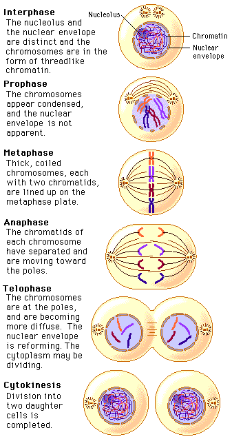

Observing Mitosis Using Prepared Slides
In your laboratory, you will study and sketch the events of cell division in either plant or animal cells, using a microscope slide of cells arrested at various stages in the process of division.
To help you identify which phase of the cycle a cell is in, let's go over the features to look for in each phase.

Next let's see how the phases of division look in real cells.
 Continue to Identifying the Phases of Mitosis.
Continue to Identifying the Phases of Mitosis.